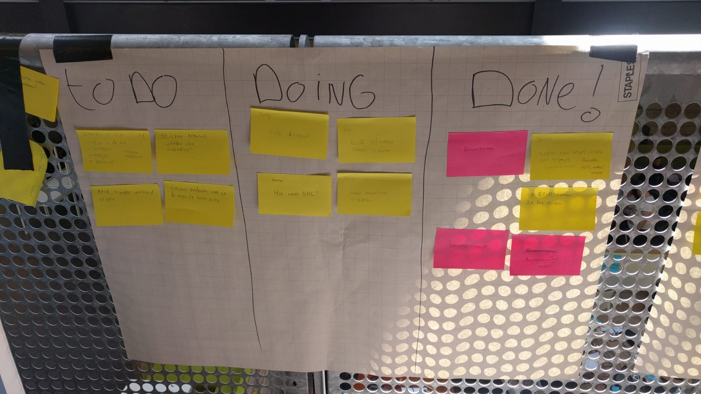

Vandaag was de tweede dag van de HCI week in Zoetermeer. We begonnen de ochtend met een brainstormsessie. We hadden de smaak goed te pakken en hebben allerlei originele ideeën bedacht. Omdat al deze ideeën zo goed zijn hebben wij besloten om te gaan stemmen voor het beste idee. Het idee met de meeste stemmen gaan we uitvoeren. Uiteindelijk kwamen we met het idee van de tattoo stempel in de club.
Als je naar een feestje gaat heb je allerlei dingen in je zakken om de avond te ‘overleven’. Je mobiel om foto’s te maken en je vrienden te vinden, maar daarnaast ook je bankpasje, id kaart et cetera. Daarnaast wil je ook graag je jas ophangen en daarvan krijg je nog iets dat je in je zakken moet stoppen om het niet kwijt te raken.
Hierop hebben wij een idee bedacht. Als al deze informatie op een tattoo zou zitten, hoef je dit niet mee te slepen de hele avond. Je hebt dan alleen nog je telefoon waarmee je foto’s kan maken en je tattoo waar alle informatie op staat. Bij de ingang krijg je een tattoo en daarop zet je je garderobe nummer door deze tattoo

Ik heb mij vandaag vooral beziggehouden met het concept bedenken. Nadat wij het concept hadden verzonnen zijn we uit gaan zoeken wat wij hier voor nodig hebben. Ik heb onderzocht wat een NCF-chip precies is en wat het inhoud. Ook ben ik erachter gekomen in wat voor soorten deze chip voorkomt en waar het allemaal in zit. Je telefoon kan deze chips lezen, maar wij willen het toch met het arduino bord doen, omdat dat veel technischer is en je zelf kunt aanpassen.
Wij hebben een prototype gemaakt met karton. Hierbij hebben wij 3 lampjes en een ultrasonisch sensor(afstand sensor) gebruikt. We wilden hiermee het eerste idee van de garderobe uittesten. Jammer genoeg hebben we de NFC chips en de reader nog niet, dus hebben wij dit geïmproviseerd. De sensor werkt nu even als NFC reader en reageerd al de hand er voor komt. Dan gaat het lichtje bij de kapstok branden waar je de jas op kan hangen. Morgen kunnen we dit idee uitbreiden met de echte sensoren, want die hebben wij vandaag besteld.